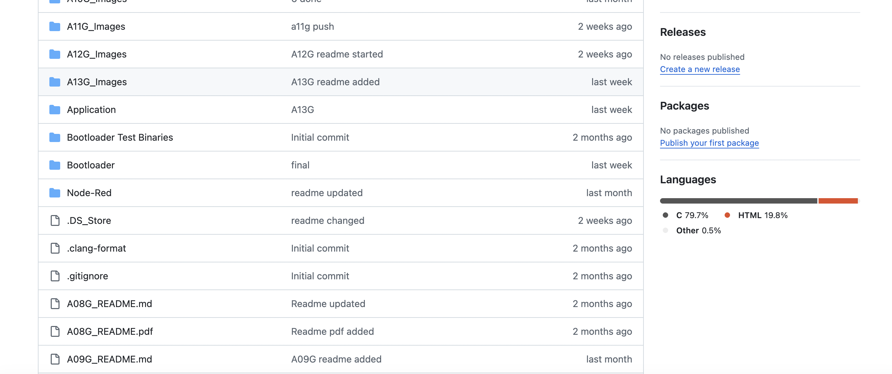
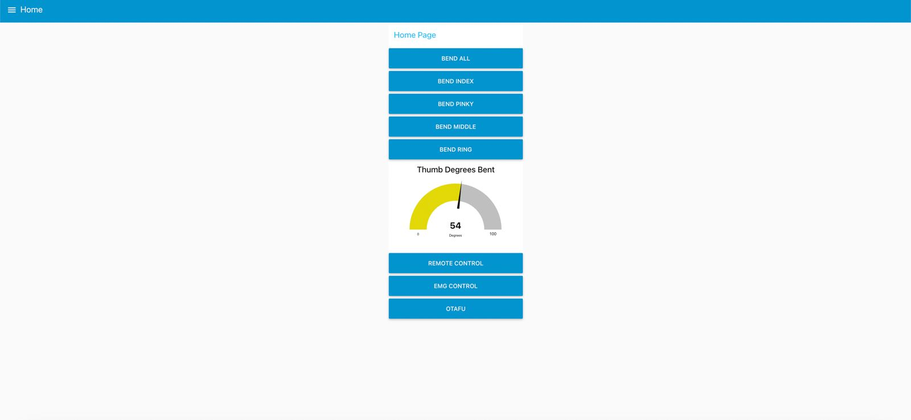

Hand Exoskeleton Front
3D-printed hand exoskeleton with four servo motors providing precise finger control for assistive support and rehabilitation.
EMG Sensor
MyoWare muscle sensor detects electrical signals from forearm muscles to trigger finger movements based on user intention.
IMU Board
LSM6DSOX IMU sensor provides precise position tracking for finger movement angles and orientation feedback.
Wi-Fi Module
SAMD21 microcontroller with integrated Wi-Fi enables remote monitoring and control through our cloud dashboard.
Project Resources
GitHub Repository
Access our complete project codebase including firmware, web interface, and documentation.
View Code Node-RED Dashboard
Access our cloud interface for real-time monitoring and control of the exoskeleton.
Open Dashboard Device Functionality
Our internet-connected hand exoskeleton integrates several components into a cohesive assistive system. At its core, the device uses four positional servo motors to provide controlled assistance to each finger. EMG sensors detect the user's muscle signals, while a Wi-Fi-enabled SAMD21 processes these inputs and connects to our cloud platform. The system includes an emergency stop mechanism for safety and position sensors to accurately track finger movement angles. All components work together to provide responsive, precisely controlled finger assistance that adapts to the user's intentions while enabling remote monitoring and adjustment through our web interface.
System-Level Block Diagram
Challenges
Our greatest challenge was calibrating the EMG sensors to reliably detect muscle signals across different users with varying muscle strengths and fatigue levels. We also encountered mechanical difficulties in creating a lightweight yet robust finger attachment system that could transfer force effectively without causing discomfort.
These challenges were addressed through iterative testing with multiple users, implementing adaptive thresholding algorithms for the EMG signals, and redesigning the finger attachment points using more flexible materials with improved stress distribution.
Prototype Learnings
What We Learned
We learned that early user testing is critical for assistive technology, as theoretical designs often require significant modifications once actual patients interact with the device. The integration between hardware and software components proved more complex than anticipated, particularly in achieving low-latency response between EMG signal detection and motor activation. Additionally, we discovered the importance of designing for varied hand sizes and considering user fatigue during extended use sessions.
What We'd Do Differently
If given the opportunity to rebuild this device, we would focus on creating a more compact and portable design by miniaturizing the connections and enabling easier mounting mechanisms. We would implement a more rigorous testing schedule beginning earlier in the development process to identify usability issues before finalizing mechanical components. Additionally, we would invest more time in prototyping multiple iterations of the CAD models to optimize the ergonomics and weight distribution across different hand sizes before committing to the final design.
Next Steps & Takeaways
Future Improvements
The most crucial enhancement would be integrating force sensors on each finger to create an adaptive assistance system that responds to the patient's own efforts. This would allow the device to provide precisely the right amount of supplementary force based on real-time measurements of the patient's muscle activation, gradually decreasing assistance as strength improves—creating a truly responsive rehabilitation tool that evolves with the patient's recovery journey. We would also refine the web interface to display this force data alongside movement metrics, giving therapists more comprehensive insights into recovery progress.
Course Learnings
ESE5160 provided invaluable insights into the complete lifecycle of IoT device development, from initial concept to functional prototype integrated with cloud services. The progression of assignments built our technical skills incrementally, particularly in firmware development and cloud connectivity, which proved essential for implementing the remote control features of our exoskeleton. Perhaps most importantly, the course taught us to approach hardware-software integration systematically, considering performance, reliability, and security at every stage of development.